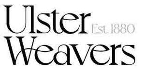

Trade Mark Journal No.2025/032 8 August 2025
UK00004171472 10 March 2025 (18,20,21,24,25,27)

- Class 18
- Tote bags; knitted bags; leather bags, suitcases and wallets; leather and imitation leather bags; garment bags for travel; travel bags; trunks being luggage and suitcases; animal skins and hides; umbrellas and parasols; canes and walking sticks; harnesses and saddlery; collars, leashes and clothing for animals.
- Class 20
- Upholstered furniture; worktops; bed pillows; pillows; wall-mounted curtain holders; cushions; seat cushions; cushions; chair cushions; cushions for chairs; decorative cushions; doorstops, not of metal or rubber; bean bag chairs.
- Class 21
- Oven mitts; kitchen mitts; barbecue mitts; tea cosies; tea cozies; plates; bowls; dish drying mats; serving trays; butlers' trays; trays for domestic purposes; valet trays for household purposes; mugs; coffee mugs; glass mugs; pot holders; glass beverageware.
- Class 24
- Tea towels; kitchen towels; textile kitchen towels; textile place mats; fabric place mats; place mats of textile; place mats of textile material; individual place mats made of textile; cloth coasters; textile coasters; coasters of textile; glass cloths being towels; hand-towels made of textile fabrics; duvet covers; duvets; bedspreads; bed sheets; flat bed sheets; fitted bed sheets; bed sheets for children; pillow shams; pillow cases; pillow covers; curtains of textile; curtain liners; curtains of textile or plastic; window curtains; bath towels; towel sets; towels; kitchen towels of cloth; textile hair drying towels; face towels of textiles; towels of textile; dish towels for drying; hand towels of textile; hand towels; large bath towels; blanket throws; woven fabrics for furniture; throws for furniture; woven fabrics; knitted fabrics; woolen fabrics; woolen blankets; curtain tie-backs of textile.
- Class 25
- Aprons; knitted gloves; knit shirts; skirts; knit dresses; knitted caps; knit bottoms; knit pants; knit tops; knitted dresses; woven tops; woven bottoms; woven dresses; woven skirts; woolen socks; woolen tights; woolen sweaters; dresses of wool; headwear; footwear.
- Class 27
- Bath mats; non-slip mats for baths; textile bath mats; fabric bath mats; rugs; Bathroom rugs; area rugs; carpets and rugs.
Ulster Weavers Home Limited
Representative: Meissner Bolte (UK) Limited